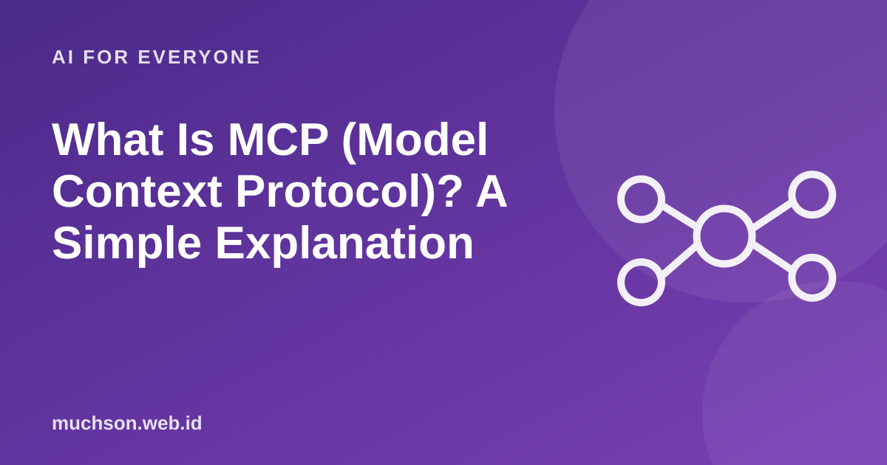

Home › Articles › AI for Everyone
AI for EveryoneWhat Is MCP (Model Context Protocol)? A Simple Explanation
MCP keeps coming up in discussions of AI assistants. Put simply, it is like a standard plug: one shape of connection so many tools can be linked to many AI assistants without making a special cable every time.

The problem it solves
Before the standard, every AI assistant needed a special integration for each service: calendar, file storage, database, task tracker. That meant repeated work for developers and limited choice for users. The Model Context Protocol (MCP) is an open standard that lets the service side provide a single "server", so any AI app that supports the standard can use it.
Text description of the diagram
- AI app (client): The assistant or code editor you use
- MCP: a uniform connecting language: The rules of conversation between assistant and tool
- MCP server (tool or data): Calendar, files, database, tracker and more
Examples of use
- An assistant reads project documents and writes a status summary.
- A coding assistant opens a development database to understand the table structure before writing a query.
- An assistant checks your meeting schedule, then drafts an agenda and an invitation.
- An assistant creates a ticket in a task tracker from meeting notes.
What to watch out for
FAQ
Is MCP only for programmers?
Setting it up is usually done by technical people, but the result can be felt by every user of an AI assistant that supports it.
Is MCP the same as an API?
No. An API is how one program asks another for data. MCP is a standard that makes it easier for AI assistants to discover and use many tools, often built on top of APIs.
Is MCP safe?
A standard alone does not guarantee safety. Security depends on the permissions granted, where the server comes from and user oversight.